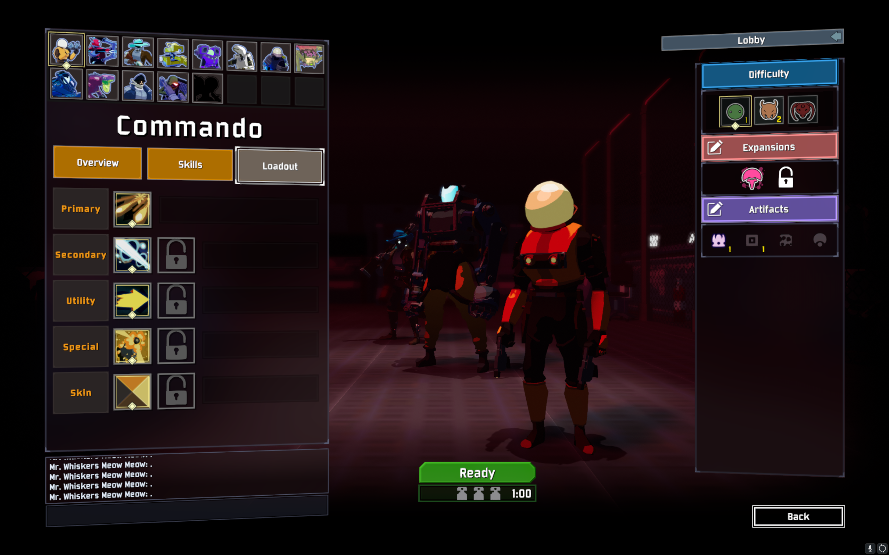
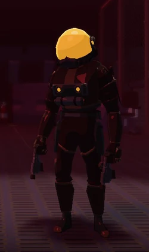
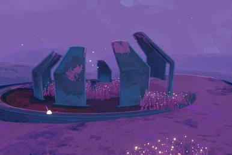
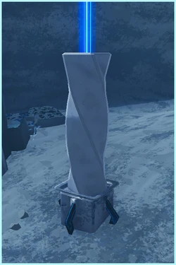
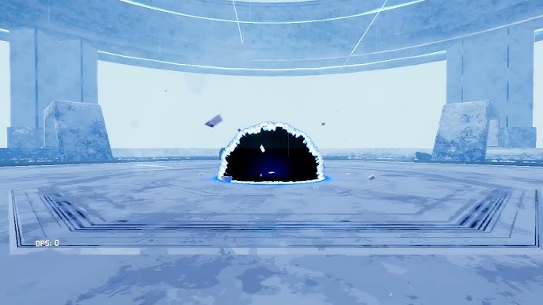
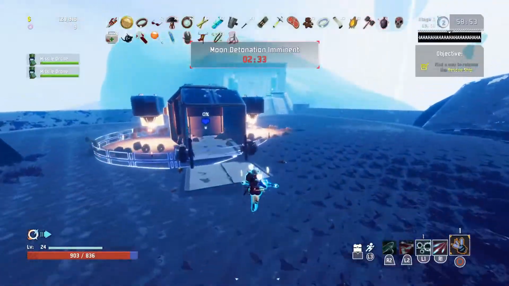

how to defeat mithrix in:

Step 1: Choose Your Character

-- if you beat Mithrix on the hardest difficulty you unlock an alternate skin --
alternate skin for commando

Step 2: Collect Items and Advance to Stage 5

-- defeat the boss and enter the teleporter --
-- press e to allign it with the moon instead of the planet --
Step 3: Complete the Commencement Event

-- to complete the commencement, stand near the pillars and kill the waves of monsters --
Step 4: Summon Mithrix

-- use the blue launchpad to get to his arena in the sky --
-- walk towards the black hole and mithrix will spawn --
Step 5: Fight Mithrix

-- when you make it to stage 3, Mithrix will steal your items --
-- Each time you hit him you will get an item back --
Step 6: Escape! Use the Rescue Ship to End the Game!

-- stand near the rescue ship and defend it from the incoming wave of monsters to charge it --